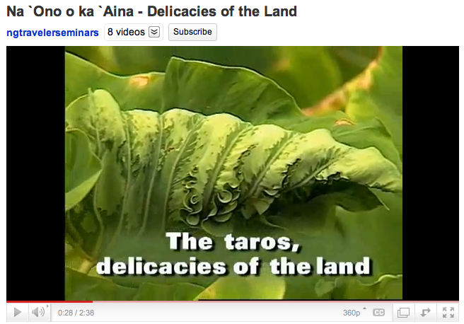
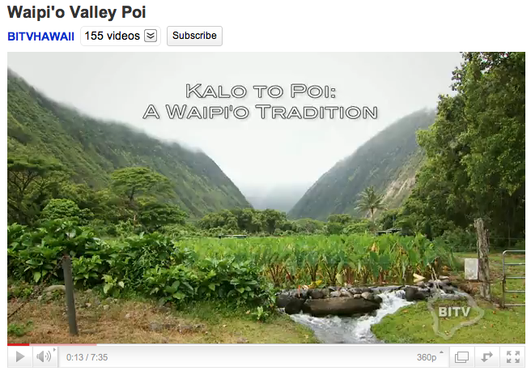

Content Area: Food and Culture
Standard: Analyzing Influences
- Objective: Identify events in Hawaiian history that show kalo’s cultural importance.
- Objective: Explain how the concepts of ‘Ohana and Hāloa relate to kalo.
- Objective: Understand kalo’s role as a sustainable food.
- Objective: Explain how language, stories, artifacts, traditions and beliefs are elements of culture and contribute to cultural preservation.
1. View this video about kalo’s role in Hawaiian history, and the importance of having different varieties to sustain a food supply. Video: Na `Ono o ka `Aina - Delicacies of the Land, min. 2:38. By ngtravelerseminars. Link to Youtube.com.

Credit: image from Na `Ono o ka `Aina - Delicacies of the Land posted on Youtube.com
2. Read about King Kamehameha I’s actions to rebuild the food supply in year 1795, and make a comparison with how we get food today. Read Kamehameha and His Warrior Kekuhaupio, pg. 419. Kamehameha Schools Press:
'(Kamehameha I) was concerned not only with the warriors, but also with the stomachs of his people. Because of his knowledge of the needs of his people, he immediately directed that food be cultivated in Honolulu, that sweet potato vines be planted and that the kalo patches be repaired... They could not depend on what had been done previously... because the kalo in the patches had been pulled up... Most of Kamehameha's warriors worked in the numerous kalo patches...'
3. View this video featuring kalo practitioners to understand kalo’s modern situation and the challenges that limit its availability. Video: Kalo Our Brother, min. 6:59. By Multinesia Productions. Link to Youtube.com.
4. Read this website as an introduction to the story of Hāloa, the older brother of the Hawaiian people, and his role in the creation of Hawai‘i. Website: Taro: Hawaii’s Roots, by Leilehua Yuen. Link to Earthfoot.org.
5. Define the word ‘Ohana to learn how it stems from the kalo plant:
The parent kalo plant is called makua. Offshoots are called ‘oha. These ‘oha are the keiki, the children, adding the suffix -na makes it plural. Over time the mature plant produces another generation of kalo. This is the source of the word ‘Ohana, or family.
6. View this video about growing crops at home to eat healthy and save money. Draw parallels about how kalo can be grown at home. Video: Recession ‘Victory’ Gardens, min. 2:10. By CBS News. Link to Youtube.com.
7. View this video about Waipi’o Valley and farmer Morgan Toledo to understand where kalo comes from, and how it is processed into poi. Video: Waipi’o Valley Poi, min. 7:35. By Big Island Television. Link to Youtube.com.

Credit: image from Waipi’o Valley Poi posted on Youtube.com
8. Plan and set a date for a field trip and work day to a kalo farm or botanical garden. Please ask the host for their expectations before a field trip.
9. Read Native Planters, Bishop Museum Press, page 97 – 98. Hawaiians hold great respect for kalo. The book has traditional Hawaiian prayers and protocols related to entering a kalo farm.
10. Follow the voice in this pule (prayer), Nā ‘Aumākua, honoring our ancestors. The pule may be spoken before entering a lo‘i (kalo farm). Translated by David Malo, from Hawaiian Antiquities, published by Bernice Pauahi Bishop Museum, available free online at this link to Google Books.com.
Nā ‘Aumākua mai ka lā hiki a ka lā kau
Mai ka ho‘oku‘i a ka hālāwai
Nā ‘aumākua iā Kahinakua iā Kahina ‘alo
Iā ka‘a ‘ākau i ka lani
‘O kīhā i ka lani
Ōwē i ka lani
Nūnulu i ka lani
Kāholo i ka lani
Eia nā pulapula a ‘oukou
‘o nā mamo a Hāloa
E mālama ‘oukou iā mākou
E ulu i ka lani
E ulu i ka honua
E ulu i ka pae ‘āina o Hawai‘i
E hō mai i ka ‘ike
E hō mai i ka ikaika
E hō mai i ke akamai
E hō mai i ka maopopo pono
E hō mai i ka ‘ike papalua
E hōmai i ka mana
‘Āmama, ua noa.
Ancestors from the rising to the setting of the sun
From the zenith to the horizon
Ancestors who stand at our back and at our front
Who stand at our right hand
A breathing of the heavens
An utterance in the heavens
A clear, ringing voice in the heavens
A voice reverberating in the heavens
Here we are your descendants,
the descendants of Hāloa
Safeguard and take care of us
Let the heavens grow
Let the earth grow
Let the islands of Hawai‘i grow
Grant us knowledge
Grant us strength
Grant us intelligence
Grant us understanding
Grant us second sight
Grant us power
So be it, it is free.